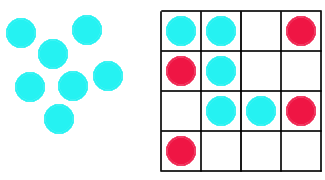

History
Dragons and Swans is a "game of soldiers."
Game Play
The Pieces:
There are two different pieces: dragons (4) and swans (12).
Rules:
To move: Each player takes turns making one valid move.
Valid Moves:
If it is the swan's turn and there are swans remaining from the initial pile, place a swan on one of the empty board positions. If no swans are remaining in the initial pile, move one of your pieces to an orthogonally-adjacent empty board position.
If it is the dragon's turn, move one of your pieces to an orthogonally-adjacent empty board position. A dragon can eat a swan by jumping over it to an empty square.
To win: Swans try to TRAP all of the dragons and dragons try to EAT all of the swans.
Swans go first and place one swan on an empty square. Dragons then move next and a dragon must be moved when it is the dragon's turn. On each turn, if there are swans available in the initial pile, a swan must be placed on an empty square. Swans cannot move until all of the swans have been placed on the board.
Pictures:
|  |
References:
NRich. Dragons and Swans - a game for two players. 18 Feb 2007. <http://www.nrich.maths.org/public/viewer.php?obj_id=1211&part=index&refpage=monthindex.php>.
Games of Soldiers. Games of Soldiers - Fox & Geese. 18 Feb 2007. <http://www.di.fc.ul.pt/~jpn/gv/fox-geese.htmx&part=index&refpage=monthindex.php>.